응용지질기사 (2018-09-15 기출문제)
1과목: 암석학 및 광물학
1. 지구내부의 성층구조에서 외핵과 맨틀을 구분하는 불연속면은?
- 콘라드면
- 레만 불연속면
- 구텐베르그 불연속면
- 모호로비치 불연속면
(정답률: 73%)

2. 화성암의 분류에 관한 설명 중 옳은 것은?
- IUGS 분류에 의하여 토날라이트는 화강암에 비해 정장석의 함량이 높다
- 중앙해령에서 분출하는 화산암은 칼크-알칼리암 계열에 해당한다.
- AFM도에서 솔레아이트암 계열은 분화가 진행될수록 철의 함량이 계속 감소한다
- 암석의 화학분석치로부터 가상적인 광물조합비를 계산하는 것을 노옴분석이라고 한다.
(정답률: 63%)
3. 석회질 암석 내에 석영과 점토광물이 불순물로 포함되어 있을 때, 이 암석이 변성작용을 받으면 새로운 광물들이 생성되면서 기체를 방출한다. 이 때 방출될 수 있는 기체는?
- 메탄
- 수소
- 질소
- 이산화탄소
(정답률: 90%)
4. 변성암의 종류가 다양한 이유와 관련이 가장 없는 것은?
- 원암의 종류
- 변성작용의 종류
- 변성작용의 정도
- 변성작용을 받은 시기
(정답률: 89%)
5. 다음 중 암편 50%, 장석 30%, 석영 20%로 구성되는 퇴적암은?
- 석영사암
- 암편사암
- 천매사암
- 장석잡사암
(정답률: 81%)
6. 모래 크기의 쇄설성 퇴적암이 아닌 것은?
- 아르코스
- 실트암
- 그레이와케
- 석영사암
(정답률: 78%)
7. 다음과 같은 성질을 갖는 화성암은?
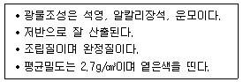
- 반려암
- 유문암
- 화강암
- 현무암
(정답률: 80%)
8. 점토질 퇴적물이 광역 변성작용에 의해 형성된 이질 편마암에 특징적으로 나타나는 광물은?
- 규선석, 남정석, 홍주석
- 석류석, 녹염석, 규회석
- 양기석, 금운모, 각섬석
- 투휘석, 투각섬석, 주석
(정답률: 67%)
9. 주로 조회장석과 휘석으로 구성된 관입화성암으로서 오피틱 조직을 갖는 특징이 있는 암석은?
- 사문암
- 휘록암
- 섬록반암
- 섬장반암
(정답률: 72%)
10. 석회암의 주성분 광물이 아닌 것은?
- 감람석
- 방해석
- 고회석
- 아라고나이트
(정답률: 82%)
11. 퍼어다이트의 생성을 설명하는 것은?
- 용리
- 고용체
- 동질이상
- 유질동상
(정답률: 78%)
12. X-선 회절에 적용되는 브래그의 방정식에서 실제 X-선 분말 회절기를 이용하여 측정하는 것은?
- 회절각
- 격자간격
- x선의 파장
- n=1, 2, 3등의 정수
(정답률: 61%)
13. 다음 광물 중 이온결합의 특성을 가장 적게 나타내는 것은?
- 암염
- 형석
- 방해석
- 섬아연석
(정답률: 50%)
14. 다음 중 대칭의 3요소에 대하여 대칭이 이루어졌을 때 이를 지칭하는 용어가 아닌 것은?
- 대칭면
- 대칭심
- 대칭점
- 대칭축
(정답률: 78%)
15. 토파즈 내에 발달하는 훈색 또는 변채의 효과가 나타나는 원인은?
- 쌍정 경계에서 나타나는 빛의 반사효과
- 구성원자들 사이에서 나타나는 빛의 회절효과
- 내부에 발달한 벽개면에서 나타나는 빛의 간섭효과
- 구성하는 원자들 모서리에 나타나는 빛의 분산효과
(정답률: 61%)
16. 식상은 결정의 대칭 결정에 중요한데 인회석의 식상에서 대칭효시는?
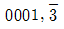
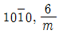
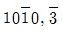
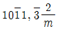
(정답률: 54%)
17. 방연석과 섬아연석은 결정형태가 비슷하며 대체로 공존하고 있다, 육안으로 구별하는 방법 중 가장 좋은 방법은?
- 색과 조흔
- 점성과 굳기
- 광택과 투명도
- 쪼개짐과 깨짐
(정답률: 75%)
18. 다음 중 광물의 정의에 대한 일반적인 설명으로 옳지 않은 것은?
- 대부분의 광물은 무기질로서 상온에서는 고체상태이다.
- 광물은 일정하거나 제한된 범위 내에서 변하는 화학조성을 가지고 있다.
- 실험실이나 산업체에서 만들어지는 다이아몬드나 석영 등도 광물에 속한다.
- 대부분의 광물의 내부구조는 규칙적인 원자배열을 하며, 원자배열이 불규칙적인 것을 비정질이라고 한다.
(정답률: 86%)
19. 현재 원자의 질량에 대한 기준이 되는 원소는?
- 1H
- 12C
- 16N
- 14O
(정답률: 83%)
20. 다음 중 편광현미경의 배율과 일치하는 것은?(오류 신고가 접수된 문제입니다. 반드시 정답과 해설을 확인하시기 바랍니다.)
- 석영
- 각섬석
- 정장석
- Ca-사장석
(정답률: 54%)
2과목: 구조지질학
21. 벨렘나이트(화석)가 뚝뚝 끊어져 있으며 그 사이에는 방해석이 충진하고 있다. 11mm 길이의 화석 토막이 2개, 10mm 길이의 화석 토막이 6개, 충진하고 있는 방해석의 총길이가 100mm라면, 스트레치(stretch)는?
- 0.45
- 1
- 1.22
- 2.22
(정답률: 40%)
22. 다음 중 지진파에 해당되지 않는 것은?
- P파
- S파
- Q파
- 표면파
(정답률: 88%)
23. 지구대의 형성과 가장 관련이 깊은 지질구조는?
- 부정합
- 정단층
- 수직단층
- 습곡구조
(정답률: 83%)
24. 다음 중 지진과 지진파에 대한 설명으로 옳은 것은?
- 지진파 중 S파의 속도가 가장 느리다.
- 암석의 밀도가 증가하면 지진파의 속도도 증가한다.
- 지진해일의 진행속도는 시간당 300KM를 넘지 못한다.
- 대륙의 단층을 따라 발생한 지진은 지진해일을 일으킨다.
(정답률: 83%)
25. 아래 내용 중 ( ) 안에 들어갈 알맞은 용어는?
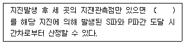
- 지진의 규모
- 진앙지 거리
- 진원지 심도
- 지진 재해도
(정답률: 86%)
26. 다음 도면에서 향사형 배사에 해당하는 부분은?
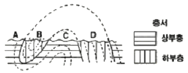
- A
- B
- C
- D
(정답률: 72%)
27. 다음의 암석 내에 발달할 수 있는 면구조가 잘못 연결된 것은?
- 편암 – 편리
- 사압 - 분급층리
- 편마암 – 사층리
- 슬레이트 – 점판 벽개
(정답률: 86%)
28. 대륙지각의 평균 밀도가 2.5g/cm3 일 때, 대륙지각 하부인 30km 깊이에서의 정암압은?
- 73.5MPa
- 76.5MPa
- 735MPa
- 765MPa
(정답률: 60%)
29. 경첩단층이란?
- 한 점을 중심으로 회전하는 단층
- 지층의 주향과 45°내외로 교차하는 단층
- 단층과 지층의 주향이 거의 직교하는 지층
- 단층의 실이동이 단층 연장상에서 동일한 않은 단층
(정답률: 47%)
30. 어떤 지역에서 평균 N60E/88NW 방향을 갖는 암맥들이 많이 관찰되었다. 이들은 이 지역에 인장응력이 강하게 작용하던 시기에 관입한 암체들로 해석이 되었다. 이 당시 이 지역에 인장응력이 작용했던 방향은?
- N30W – S30E
- N30E - S30W
- N60E – S60W
- N60W - S60E
(정답률: 63%)
31. 아내 내용 중 ( )안에 공통으로 들어갈 용어는?
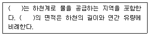
- 범람원
- 배수령
- 분지천
- 배수분지
(정답률: 72%)
32. 고생대 말의 대륙 형태로 가장 알맞은 것은?
- 인도가 아시아 대륙과 충돌하였다
- 아프리카 대륙으로부터 마다카스카르가 분리되었다.
- 대륙 충돌로 인하여 초거대 대륙인 판게아가 형성되었다.
- 남쪽 대륙이 곤드와나에서 로라시아 동북쪽 대륙이 분리되었다.
(정답률: 82%)
33. 판의 수렴형 경계에서 일반적으로 우세하게 작용하는 변형은?
- 전단변형
- 인장변형
- 압축변형
- 연성변형
(정답률: 84%)
34. 다음 중 면구조와 가장 거리가 먼 것은?
- 벽개
- 부딘
- 세맥
- 절리
(정답률: 72%)
35. 스러스트 단층계에서 개개의 단층이 곡면단층이고 대부분 후방지 쪽으로 경사하고 있으며, 데콜망으로 수렴하는 구조는?
- 데콜망
- 인열단층
- 끌림 습곡
- 인편상구조
(정답률: 57%)
36. 다음 1차 구조 중 지층의 상하관계 판단에 이용될 수 없는 것은?
- 건열
- 사층리
- 점이층리
- 비대칭 연흔
(정답률: 73%)
37. 램지의 등경사선에 의한 습곡 분류 중 2부류에 속하는 습곡은?
- 유사습곡
- 평행습곡
- 대칭습곡
- 비대칭습곡
(정답률: 62%)
38. 다음 그림은 습곡구조의 향사구조를 나타내고 있다. 가장 오래된 지층은?
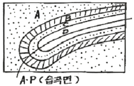
- A
- B
- C
- D
(정답률: 76%)
39. 다음 중 호소를 성인에 따라 분류할 때 포함되는 않는 것은?
- 잔적호
- 내륙호
- 구조호
- 패색호
(정답률: 55%)
40. 다음 그림과 같은 단층구조에서 인장절 리가 en echelon array로 발달하였다면, 이 경우를 변형도 타원으로 설명한 것 중 옳은 것은?
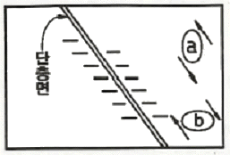
- a의 경우이다.
- b의 경우이다
- a, b의 두 가지 경우이다.
- a, b의 두 가지 경우가 아닌 또 다른 경우이다.
(정답률: 71%)
3과목: 탐사공학
41. 중력탐사를 시행하여 다음과 같은 중력이상 그래프를 얻었다. 중력이상 최대값의 반이 되는 지점은 최대값인 곳으로부터 300m 떨어진 지점이다. 지하의 광체가 균질의 구형체라고 가정하면 구형체 중심의 심도는?
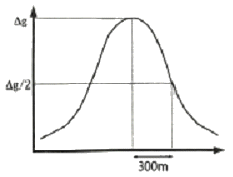
- 150m
- 200m
- 300m
- 400m
(정답률: 51%)
42. 지자기변화에 대한 설명 중 옳지 않은 것은?
- 지가기의 일변화는 태양과 달의 영향에 의해 일어나느 변화이다.
- 자기폭풍은 주로 태양의 흑점 활동과 관계있으며 그 주기는 약 1년이다.
- 영년변화는 오랜 시간에 걸쳐 일어나므로 단기간의 자력탐사에서는 무시해도 좋다.
- 자기폭풍은 매우 큰 자기장의 변화를 일으키므로 탐사활동을 중단해야 한다.
(정답률: 68%)
43. 다음 원소의 동위원소 중 감마선 방사능탐사에 흔히 이용되지 않는 것은?
- U
- Ca
- K
- Th
(정답률: 77%)
44. 다음 중 지시원소에 대한 설명으로 옳지 않은 것은?
- 분석비가 싸야한다.
- 금 광상의 경우 As가 지시원소이다
- 지구화학적 환경에서 이동도가 작아야 한다.
- 지시원소란 광체를 발경하기 위해 분석대상이 되는 원소이다.
(정답률: 78%)
45. 반사법 탄성파 탐사에서 사용되는 공심점 기법에 대한 설명으로 옳은 것은?
- 지층의 두께를 동일하다고 가정하는 해석기법이다.
- 육상 탄성파 탐사에서 사용되며, 해상에서는 적용할 수 없다.
- 수진점에 기록된 반사파 기록을 굴절파 기록으로 바꾸는 것이다.
- 발파점-수진점 간격을 달리하여 동일한 반사점으로부터 여러 개의 트레이스를 기록하는 것이다.
(정답률: 78%)
46. 매질의 전기비저항을 결정하는 Archie 식에서 고려하고 있지 않는 물성은?
- 공극률
- 수포화도
- 지층계수
- 수리전도도
(정답률: 50%)
47. 다음 전자탐사법 중 탄성파 탐사와 유사한 방법으로 탐사자료를 획득하고 처리하는 방법은?
- MT 탐사법
- GPR 탐사법
- TEM 탐사법
- VLF 탐사법
(정답률: 78%)
48. 경사경계면에 대한 굴절법 탐사에서 이론적으로 옳지 않은 사항은?
- 양방향 탐사를 수행한다.
- 1층의 속도는 한 방향 직접파의 기울기만 이용하여 구할 수 있다.
- 2층의 속도는 양방향 선두파들의 기울기를 각각 구하여 그 평균값을 취한다.
- 지층의 경사는 1층의 속도와 양방향 선두파들의 기울기를 이용하여 구할 수 있다.
(정답률: 59%)
49. 수평 2층구조의 1층 및 2층의 탄성파 속도가 각각 1000m/sec, 3000m/sec일 때, 임계 굴절파이 임계각의 크기와 가장 가까운 것은?
- 20
- 30
- 45
- 60
(정답률: 54%)
50. 항공자력탐사 측정자료로부터 2차 미분도를 작성하면 다음 중 어떤 결과를 얻는가?
- 자성체의 광종이 식별된다.
- 자성체의 심도와는 관계없다.
- 천부 자성체의 영행이 뚜렷해진다.
- 심부 자성체의 영행이 뚜렷해진다.
(정답률: 78%)
51. 자연적으로 발생하는 방사선원이 아닌 것은?
- K
- U
- Th
- Cs
(정답률: 74%)
52. 다음 중 얇은 지층의 경계를 가장 명확하게 나타내는 검층법은?
- 전자 검층법
- 유도분극 검층법
- 노말 전기비저항 검층법
- 지향식 전기비저항 검층법
(정답률: 47%)
53. 수평 3층 구조에 대해 굴절법 탄성파 탐사를 실시하여 다음과 같은 주시곡선을 얻었다면 그 이유로서 가장 적당한 것은?
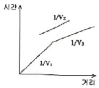
- 중간층의 두께가 상하부층에 비해 매우 얇기 때문이다.
- 중간층의 두께가 상하부층에 비해 매우 두껍기 때문이다.
- 중간층의 속도가 상하부층의 속도보다 느리기 때문이다.
- 중간층의 속도가 상하부층의 속도보다 빠르기 때문이다.
(정답률: 67%)
54. 여러 조암 광물에 흔히 포함되어 있다는 장점이 있고, 비교적 반감기가 짧아서 젊은 암석의 연령 측정이 가능하며, 측정할 수 있는 연령 범위가 매우 넓은 절대 연령 측정법은?
- U-Pb법
- K-Ar법
- Rb-Sr법
- Tritium법
(정답률: 83%)
55. 전기탐사와 가장 관계가 깊은 법칙은?
- Ohm의 법칙
- Snell의 법칙
- Hooke의 법칙
- Newton의 법칙
(정답률: 80%)
56. 우라늄광상에 대한 지화학 탐사 중 자연수나 토양시료에 함유된 지시원소에 가장 적합한 기체원소는?
- SO4-
- B
- Rn
- F
(정답률: 72%)
57. 전기비저항탐사(웨너배열)에서 4전극간의 거리를 a라고 하면 비저항 ρ는 어떻게 표t시하는가?
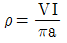
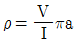
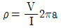
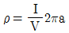
(정답률: 75%)
58. 주파수영역 유도분극탐사에서 전류의 주파수가 0.⑤Hz 일 때 외견 비저항이 220ohm-m이고, 1Hz 일 때 외견 비저항이 187ohm-m이라면, 이때의 PFE치는?
- 0.5%
- 5%
- 15%
- 25%
(정답률: 52%)
59. 지하투과 레이더 탐사의 분해능에 관한 설명으로 옳지 않은 것은?
- 레이다 탐사에서 분해능은 시간적으로 인접한 두 반사 신호를 구분하는 능력으로 주파수의 함수이다.
- 대부분의 레이다 탐사기기는 중심주파수와 대역폭이 같도록 설계되어 있으며, 펄스의 폭은 대역폭, 즉 중심주파수에 비례한다.
- 송수신 안테나는 일정 주파수내의 신호만을 방사 또는 수신하도록 제작되어 있으며, 이러한 주파수 대역을 안테나의 대역폭이라 한다.
- 레이다 파의 파장은 레이다 파의 속도와 주기의 곱이며, 분해능은 파장의 1/4이므로, 분해능을 향상시키기 위해서는 중심주파수가 커야 한다.
(정답률: 47%)
60. 다음과 같은 특징을 갖는 자성체는?
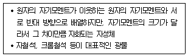
- 강자성체
- 반자성체
- 상자성체
- 페리자성체
(정답률: 66%)
4과목: 지질공학
61. 투수량계수(T)와 수리전도도(K) 및 포화된 대수층 두께(b)의 관계식으로 옳은 것은?
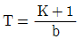
- T=Kb
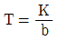
- T=Kb2
(정답률: 72%)
62. 다음 설명 중 옳지 않은 것은?
- 점성토는 압밀 침하량이 크다.
- 사질토는
 이고, C=0인 흙을 말한다.
이고, C=0인 흙을 말한다. - 점성토는
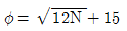
이고, C=0인 흙을 말한다. - 모래는 토립자가 모나고 균일한 입경일 때 C=20정도이다.
(정답률: 60%)
63. 아래와 같은 조건으로 어느 흙 시료의 변수위 투수시험을 하였을 때 투수계수는?
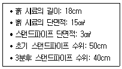
- 0.0035 cm/sec
- 0.0045 cm/sec
- 0.0⑤5 cm/sec
- 0.0065 cm/sec
(정답률: 54%)
64. 터널공사 시 암반조건에 대한 공학적 성질을 제시해주는 Q값을 구하는 아래 식에서(RQD/Jn)가 평가하는 암반의 성질은?
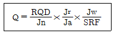
- 작용응력
- 풍화상태
- 암괴의 크기
- 암괴간의 전단강도
(정답률: 68%)
65. 두 층으로 이루어진 성토층이 있다. 상부층의 두꼐는 1.2m, 하부층의 두께는 2.3m, 상부층의 투수계수는 1.3×10-4m/sec, 하부층의 투수계수는 3.1×10-4m/sec일 때 이 성토픙의 수평방향 평균투수계수는?
- 1.14×10-4m/sec
- 1.74×10-4m/sec
- 2.48×10-4m/sec
- 3.34×10-4m/sec
(정답률: 54%)
66. 층리를 따라 강도가 약하고 물에 침수 시 팽윤 현상을 나타내는 특징을 갖는 기반암은?
- 셰일
- 사암
- 석회암
- 화강암
(정답률: 73%)
67. 현장 원위치 시험법 중 사질토를 대상으로 해머를 자유낙하시켜 30cm 관입하는데 필요한 타격횟수를 측정하는 것은?
- 콘관입시험
- 베인전단시험
- 평판재하시험
- 표준관입시험
(정답률: 74%)
68. 다음 중 충적층 또는 홍적층에서 공극률이 가장 큰 지층은?
- 점토층
- 모래층
- 자갈층
- 모래,자갈층
(정답률: 58%)
69. 다음 중 지반의 허용지지력이 가장 작은 토질은?
- 자갈
- 조립사
- 풍화암
- 연약한 점토
(정답률: 68%)
70. 암반 불연속면의 벽면강도 측정을 위한 슈미트 해머 시험에 대한 설명으로 옳지 않은 것은?
- 시험은 불연속면에 수직 방향으로 실시한다.
- 해머의 반발치 r의 값은 10에서 60정도 범위의 값으로 나타낸다.
- 시험은 해머가 암반의 표면에 부딪힐 때의 반발력을 측정하는 것이다.
- 측정은 10회를 실시하며 전체 평균값으로 해머의 반발치 r의 값을 산출한다
(정답률: 62%)
71. 암반사면에서 평면파괴가 일어나기 위해 만족되어야 하는 기하학적인 조건으로 옳지 않은 것은?
- 미끄러짐면의 경사각은 사면의 경사각보다 작아야 한다.
- 미끄러짐면의 경사각은 그 면의 마찰각보다 작아야 한다.
- 미끄러짐면은 경사면에 평행하거나 거의 평행하여야 한다.
- 미끄러짐에 저항력을 갖지 않는 이완면이 미끄러짐의 측면 경계루로서 암반 내에 존재하여야 한다.
(정답률: 64%)
72. 모어원에서 응력상태가 다음 그림과 같을 때, 어떤 조건에서의 응력상태를 나타내는 것인가? (단, σ3<0, σ1=0이다.)
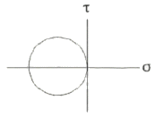
- 정수압
- 순전단응력
- 삼축압축응력
- 일축인장응력
(정답률: 73%)
73. 염분도가 비교적 높은 물속에서 퇴적된 점토가 갖는 구조는?
- 분산구조
- 양털구조
- 층리구조
- 벌집구조
(정답률: 63%)
74. 암석의 공극률에 직접적으로 영향을 주는 요소가 아닌 것은?
- 고결 정도
- 입자 모양
- 암석의 성인
- 입자의 배열상태
(정답률: 71%)
75. 다음 중 일정한 응력 하에서 변형률이 지속적으로 증가하는 크리프 현상을 가장 잘 보이는 대표적인 암석은?
- 사암
- 암염
- 유문암
- 편마암
(정답률: 63%)
76. 두께가 5m인 점토층에 임의의 하중이 가해졌을 때 95% 압밀되는데 소요되는 일면배수인 경우와 양면배수인 경우의 시간차는? (단, 압밀계수는 0.006cm2/sec, 시간계수는 1.127이다.)
- 406.6일
- 407.6일
- 408.6일
- 409.6일
(정답률: 43%)
77. 그라우팅 시공 시 그라우트의 배합에 대한 설명으로 옳지 않은 것은?
- 그라우트의 농도가 높아지면 점성은 감소한다.
- 일반적인 그라우팅에서 무시멘트비는 10~1의 범위를 사용한다.
- 동일 압력하에서 그라우트의 농도가 높아질수록 주입량은 감소한다.
- 그라우트의 농도가 높아질수록 주입압력을 높여야 주입효과가 크다.
(정답률: 62%)
78. 표준관입시험 시 사용되는 샘플러로 자갈이나 암반층을 제외한 모든 토질의 교란시료를 채취하는 데 가장 널리 사용되는 샘플러의 종류는?
- 이중관 샘플러
- 얇은 관 샘플러
- 분리형 원통 샘플러
- 고정 피스톨 샘플러
(정답률: 69%)
79. 다음 중 산사태 및 사면붕괴 문제 해결을 위한 공학적 설계에서 가장 중요하게 다루어져야 하는 것은?
- 마찰각
- 탄성계수
- 탄성파 속도
- 일축압축강도
(정답률: 84%)
80. 지반개량공법인 진동 부유 공법의 특징으로 옳지 않은 것은?
- 공사기간이 빠르고 공사비가 싸다.
- 개량할 수 있는 지반의 깊이는 통상 7~8m정도이다.
- 진동 다짐에 의해 지반내의 지하수위의 고저에 영향을 미친다.
- 느슨한 사질지반에 대한 물다짐, 진동다짐의 효과를 지중에 이용한 공법이다.
(정답률: 59%)
5과목: 광상학
81. 다음 중 철광석의 주요산지가 아닌 곳은?
- 브라질
- 인도
- 호주
- 태국
(정답률: 70%)
82. 다음 중 화성광상으로 이루어진 항은?
- 침전광상 – 벳시형광상
- 표사광상 – 반암광상
- 페그마타이트광상 – 기성광상
- 층상철광상 - 스카른광상
(정답률: 77%)
83. 다음 중 광물의 생성온도에 대한 정보를 제공해 주는 것은?
- 유체포유물
- 광물의 굳기
- 광물의 모양
- 광물의 색깔
(정답률: 84%)
84. 마그마가 냉각됨에 따라 분화작용이 진행되는 동안, 산성 마그마일수록 풍부하게 포함되는 원소는?
- 크롬
- 니켈
- 주석
- 인
(정답률: 49%)
85. 한국의 경상분지 내 후생광상 형성과 관계있는 암석은?
- 백악기 화강암
- 쥐라기 화강암
- 트라이아스기 화강암
- 선캠브리아누대의 화강 편마암
(정답률: 56%)
86. 다음 내용 중 ( )안에 알맞은 지층명은?
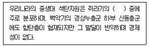
- 고한층
- 금천층
- 동고층
- 대동누층군
(정답률: 71%)
87. 다음 광상 중 퇴적광상에 속하는 것은?
- 스카른광상
- 정마그마광상
- 풍화잔류광상
- 페그마타이트광상
(정답률: 80%)
88. 공생을 이룰 수 있는 광종끼리 나열한 것으로 옳지 않은 것은?
- 형석 - 방해석
- 명반석 – 전기석
- 황동석 – 방연석
- 회중석 - 휘수연석
(정답률: 52%)
89. 우리나라 고생대 석회석광상의 특징에 대한 설명으로 옳지 않은 것은?
- 조선누층군과 평안누층군 등에 분포한다.
- 퇴적환경은 육성층과 해성층이 모두 확인되나 주로 육성기원이다.
- 주 분포지역으로는 강원도 중부와 남부 및 충북 북부지역이다.
- 생성시기는 캄브리아기~오르도비스기와 석탄기 말에 해당한다.
(정답률: 65%)
90. 지각의 원소분포에 대한 내용으로 옳지 않은 것은?
- F, B, Li은 산성암 중 많이 수반된다.
- P, Ti는 염기성 화성암에 많이 집중된다.
- Au, Ag 등의 소량은 염기성 화성암에 배태한다.
- Ba, Sr은 알칼리가 없는 화성암에 농집된다.
(정답률: 38%)
91. 다음 중 스카른 광물이 아닌 것은?
- 녹립석
- 석류석
- 엽납석
- 투휘석
(정답률: 54%)
92. 반암 동광상에 일반적으로 발달하는 변질대를 중심부로부터 외곽부로 순서대로 나열한 것으?
- phyllic alteration – propylitiic alteration – potassic alteration
- propylitiic alteration – potassic alteration – phyllic alteration
- phyllic alteration – potassic alteration – propylitiic alteration
- potassic alteration – phyllic alteration – propylitiic alteration
(정답률: 61%)
93. 다음 중 풍화작용에 저항성이 가장 큰 광물은?
- 각섬석
- 감람석
- 백운모
- 휘석
(정답률: 62%)
94. 열수유체 내 광석광물의 침전 요인 중 온도변화를 야기하는 것이 아닌 것은?
- 비등현상
- 천수와의 혼합
- 모암으로의 열전달
- 기체나 유체에 의한 가열
(정답률: 61%)
95. 광상의 생성과 관련되는 요인에 대한 설명으로 옳지 않은 것은?
- 대부분 광상에서의 생성온도는 50~550°C 범주에 있다고 알려져 있다.
- 유체포유물은 광석광물의 생성순서를 결정하는데 이용된다.
- 광상생성의 조건 중 온도와 압력은 불가분의 관계에 있다.
- 열수용액의 산도는 금속황화물의 용해도를 직접 좌우한다.
(정답률: 58%)
96. 전 세계적으로 주요 연·아연광상의 유형에 해당되지 않는 것은?
- 교대광상
- 접촉광상
- Carlin 광상
- SEDEX(sedimentary exhalative deposit)
(정답률: 49%)
97. 두 지층 사이의 지질관계가 부정합인지 아닌지를 확인하려고 한다. 다음 조사 사항 중 적당치 않은 것은?
- 지층사이에서 기저역암을 찾으려고 한다.
- 두 지층의 주향과 경사를 세밀히 측정한다.
- 두 지층을 구성하는 입자 크기를 비교해 본다.
- 두 지층 속에 들어 있는 화석으로 시간관계를 알아본다.
(정답률: 78%)
98. 다음 중 석영 불포화상태에서 형성된 광물은?
- 네펠린
- 사장석
- 정장석
- 흑운모
(정답률: 70%)
99. 우리나라에서 연-아연을 산출하는 대표적인 광상인 연화광산이 속한 광상의 종류는?
- 퇴적광상
- 스카른 광상
- 정마그마 광상
- 페그마타이트 광상
(정답률: 51%)
100. 북한의 가장 대표적인 철광산은?
- 검덕광산
- 무산광산
- 운산광산
- 아오지광산
(정답률: 71%)